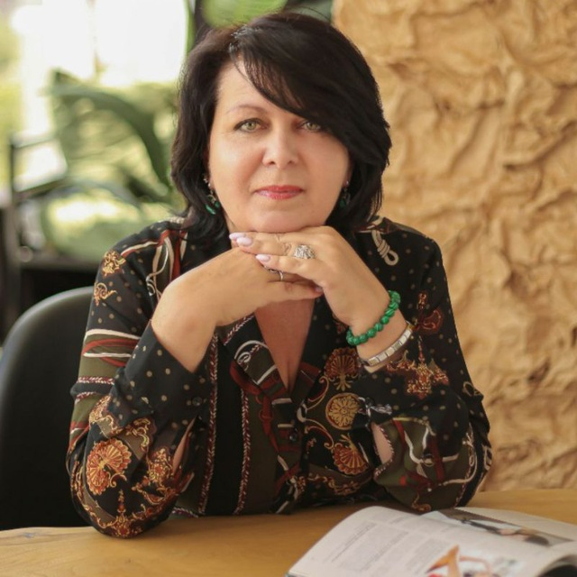

Брендбуки и фирменный стиль
Палитра, типографика, логотип, гайдлайны. Чтобы все ваши соцсети, сайт и презентации выглядели одним брендом.
Срок: 1–3 дня

ногда дизайн рождается из одного разговора. Я слышу человека — его интонацию, темп, паузы — и за этим уже видна палитра. Где-то там лиловый, где-то — глубокий зелёный с тёплым закатом.
Превращаю «сделайте красиво» в чёткую визуальную систему, которая работает на бизнес-задачи: бренд узнаётся, продукт продаётся, профиль выглядит собранно.
Палитра — это голос бренда.
От бренда «с нуля» до запуска цифрового продукта в эфир. Без долгих ТЗ — разговор, бриф и быстрый старт.
Палитра, типографика, логотип, гайдлайны. Чтобы все ваши соцсети, сайт и презентации выглядели одним брендом.
Лендинги, мини-сайты, Telegram Mini App, VK Mini App, боты для записи, AI-помощники. Делаю под ключ — от макета до публикации.
Аватары, баннеры, обложки, шаблоны постов. Чтобы экспертный профиль выглядел собранно и узнавался с первого касания.
Выберите 3 слова о себе или о вашем деле — покажу палитру, в которой вижу ваш бренд.
Это моя авторская логика — как я слышу цвет в человеке. На реальном брифе разбираемся подробнее.
не работаю по референсам вслепую. Я слушаю — и за разговором уже видна палитра. — Ирина
В студии — посты, идеи, готовые работы. Заходите — там видно, как я разбираю задачи и собираю визуалы.
Студия в VK →Расскажите, что строите — отвечу с предложением, как могу помочь визуалом или цифровыми продуктами.
— Ирина Цепаева, дизайнер